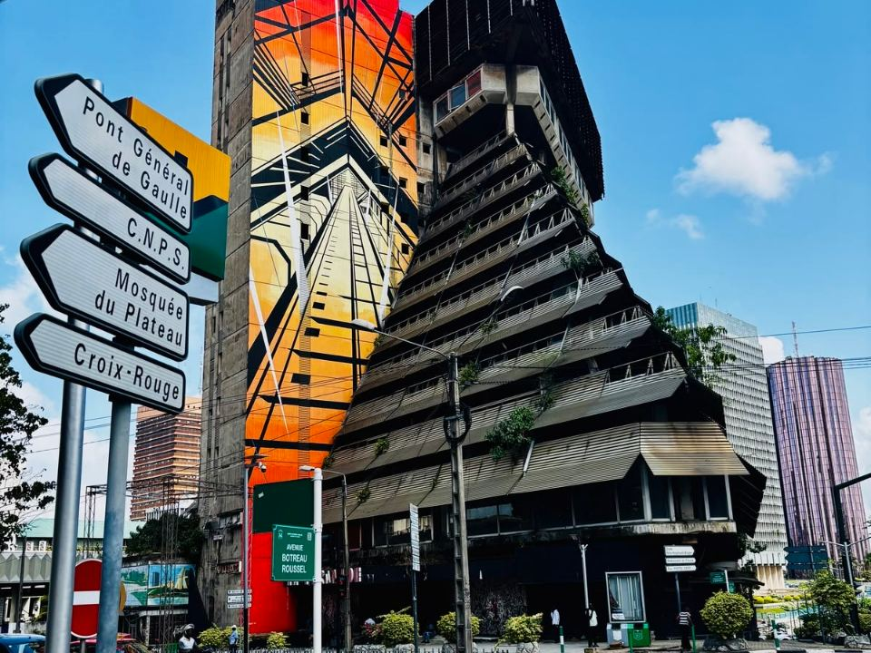
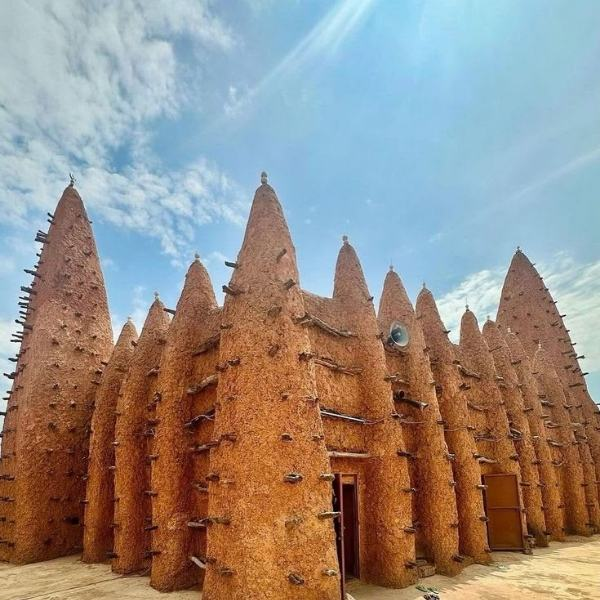
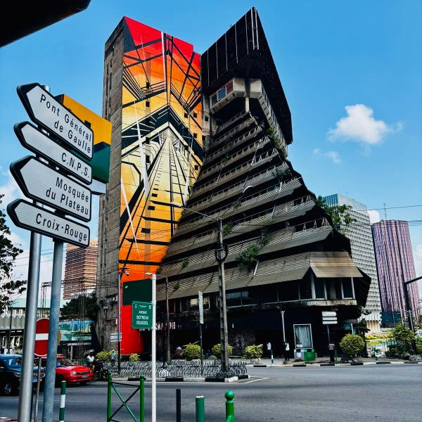

À la une · SociétéRépublique de Côte d'Ivoire · Union – Discipline – Travail
Vos démarches, simplement.
Un seul endroit pour trouver un service public, faire une démarche et suivre l'action du Gouvernement, depuis votre téléphone.
Résultats
Photo : drapeau ivoirien, bord de mer — © l'autrice du concept
Flash infos
- Engins à deux roues : enrôlement des motos non encore immatriculées sur tout le territoire à partir du 1er octobre 2026.
- Rentrée 2026-2027 : 5 081 262 kits scolaires distribués dans les écoles primaires publiques.
- Campagne 2026-2027 : prix bord champ du cacao fixé à 1 200 FCFA/kg, café à 1 300 FCFA/kg.
Démarches
Les démarches les plus demandées.
Ce que les citoyens cherchent le plus, dès le premier écran, relié aux services en ligne officiels.
-
01Guide pas à pas
Carte nationale d'identité
Première demande, renouvellement, pièces à fournir et suivi du dossier, expliqués simplement.
-
02
Passeport
Rendez-vous, pièces, retrait.
-
03
Acte de naissance
Extrait en ligne ou en mairie.
-
04
Impôts et déclarations
Déclarer, payer et obtenir vos attestations sur e-impôts, sans vous déplacer.
-
05
Couverture maladie
S'enrôler à la CMU, obtenir sa carte.
-
06
Créer une entreprise
Le guichet unique du CEPICI.
-
07
Casier judiciaire
Extrait via e-Justice.
-
+
Toutes les démarches
Le portail officiel des démarches administratives.
Par thème
Organisé par besoin, pas par organigramme.
Un pays, un portail
Des lagunes aux savanes, un même service public.
Le même niveau de service pour chaque citoyen, où qu'il vive, sur téléphone comme au guichet.
Photo : lagune, Côte d'Ivoire — © l'autrice du concept
Ma localité
Près de chez vous.
Touchez votre district sur la carte, ou choisissez-le dans la liste : services, contacts et actualités s'adaptent à votre localité.
District autonome d'Abidjan
Chef-lieu : Abidjan
- Mairie et état civilActes, légalisations
- Centre d'identification (CNI)Enrôlement, retrait
- Centre des impôtsDéclarations, attestations
- Santé et CMUHôpitaux, vaccination
Démonstration : une version réelle afficherait ici les adresses, horaires et contacts vérifiés, tenus à jour par chaque administration.
Limites des districts : geoBoundaries (CC BY 4.0), simplifiées.
Actualités
L'action du Gouvernement, au jour le jour.
Titres repris du portail officiel gouv.ci le 29 septembre 2026, à titre d'illustration.
Enseignement supérieur : un plan pour doubler les capacités de l'Université polytechnique de Man
Coopération Côte d'Ivoire – Banque mondiale : 6,3 milliards de dollars pour 25 projets stratégiques
Hôpital général de Ferkessédougou : un pavillon pédiatrique pour rapprocher les soins des enfants
Conseil des ministres du 23 septembre 2026
Communiqué officiel, au format PDF.
Lire le communiqué
Tous les conseils
Photo : La Pyramide, Plateau, Abidjan — © l'autrice du concept.
Institutions
Le Gouvernement et les institutions.
Qui fait quoi, et où trouver les textes officiels.
- 01
Primature
Le Premier Ministre, ses discours et ses interventions.
- 02
Composition du Gouvernement
Les ministres, leurs ministères et leurs missions.
- 03
Institutions de la République
Assemblée nationale, Sénat, Conseil constitutionnel et autres institutions.
- 04
Textes et publications
Communiqués, textes officiels, rapports annuels, codes.
Galerie
La Côte d'Ivoire, en images.
Les galeries photo, vidéo et audio du portail, réunies en un seul endroit.
Basilique Notre-Dame de la Paix, Yamoussoukro Masque Zaouli en spectacle Cascades de Man, district des Montagnes 
Grande mosquée de Kong, district des Savanes 
La Pyramide, Plateau, Abidjan
Dialogue
Votre avis compte.
Un service public s'améliore avec celles et ceux qui l'utilisent. Dites-nous ce qui fonctionne, et ce qui manque.
Cette page vous a-t-elle été utile ?
Une réponse en un clic, anonyme.
Écrire au Gouvernement
Une question, une réclamation ou une suggestion : le formulaire officiel vous met en relation avec le service concerné.
Signaler un problème
Une démarche bloquée, une information erronée, un lien cassé ? Signalez-le pour qu'il soit corrigé rapidement.